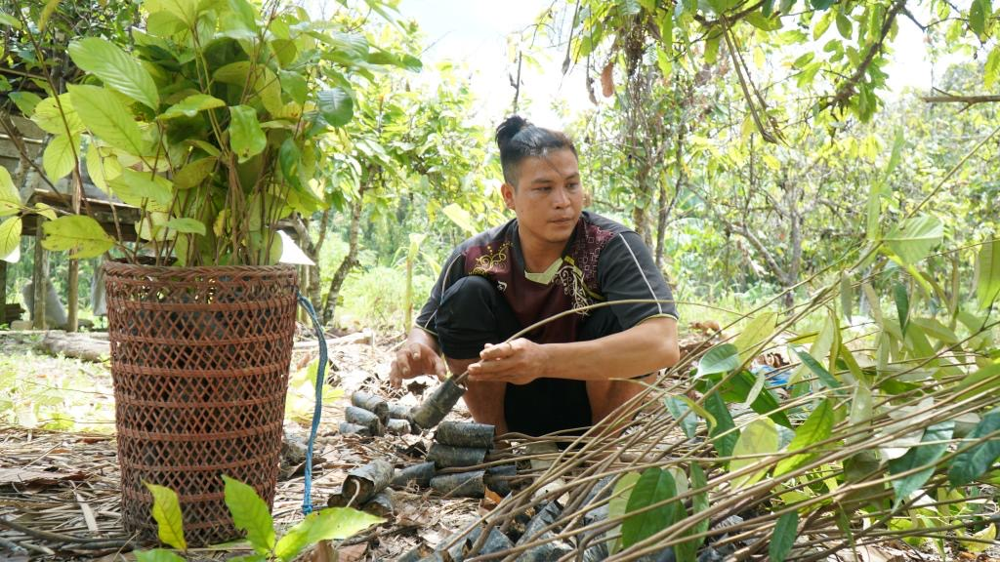

恢复森林

由于野生动物栖息地的失去，人类和野生动物之间的冲突越来越多。因此我们需要和村民一起努力，建立一个良好的系统来保护森林；但尽管如此，人类活动仍然会对社区产生经济影响。狩猎，非法砍伐和大规模的森林用途转换，这些都是社区不知道如何确保可持续的森林管理造成的。这对高保护价值森林的高破坏率产生了影响。
“我们相信保育活动一定会对社会产生直接的经济影响，但另一方面，保育活动亦会对大自然有良好的影响。”恢复农林复合经营的概念是解决这个问题的答案。
社区将种植树木，但这些树将为有长期经济价值的人生产水果；另一方面，社区仍然可以在他们的地区种植蔬菜和大米，使社区为他们的日常生活获得短期的经济价值。最终，这一概念将恢复退化的森林和土地，为社区提供可持续的经济价值。
布法尔佐内克莱河森林和土地恢复项目：这个项目将与沿河三个村庄合作，支持拉巴南研究林和乐山防护林两个保护森林的保护工作。